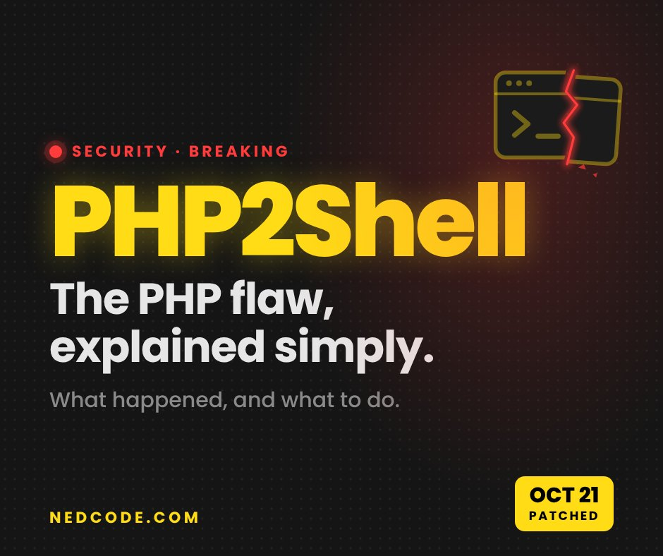

Security · Breaking
PHP2Shell Explained Simply: What Happened, Who’s at Risk and What to Do

Two bugs in PHP, the language quietly running most of the web, went public this week. Attackers moved fast, and governments pulled their own websites offline to stay safe. It’s called PHP2Shell, and part of it has been hiding in PHP since 2012.
What is PHP, in plain English?
Every time you open a website, a computer somewhere builds that page for you. On most websites, the program doing the building is written in PHP. You never see it; think of it as the kitchen behind a restaurant.
PHP runs about 70% of websites whose server language can be detected, according to W3Techs. That includes WordPress, which alone powers roughly 43% of all websites, per W3Techs figures cited by Colorlib.
What websites run on behind the scenes
PHP is slowly losing ground, but it’s still far ahead of everything else, which is why a bug in PHP is a bug for a huge part of the internet.
PHP’s share of websites over the past year
What happened with PHP2Shell
Security firm Wiz found two flaws in PHP itself, CVE-2026-109618 and CVE-2026-109619, and says AI tools helped a single researcher do it in about a week. Both are rated 9.2 out of 10 for severity, The Hacker News reported, and Wiz says versions as far back as PHP 5.4, released in 2012, are affected.
A fix was planned for October 22. Details leaked online on October 20, so PHP shipped it on October 21 instead, Help Net Security reported.
One of the bugs wasn’t new to PHP’s team. Early signs showed up in a 2024 security audit, but the team couldn’t agree on how to fix it without breaking other things, The Next Web reported. In a blog post, the PHP Foundation owned it:
“The delay was a structural failure, caused by both the security team’s decision process and its lack of resources.”
The foundation says it’s switching to majority votes on hard calls and adding staff, so a bug like this can’t sit for years again.
From discovery to emergency patch
- 2024Early signs of one bug turn up in an audit
- Aug 19Wiz finds the first flaw, with help from AI tools
- Aug 24Reported privately to the PHP team
- Oct 17Amazon spots an attack attempt, before anything is public
- Oct 20Details leak online
- Oct 21PHP releases the fix a day early, as governments take sites offline
- NowThe race to update servers
Why governments took websites offline
On October 21, the NSA and the FBI told organizations that couldn’t update right away to take their systems offline until they could, SecureWorld and Newsweek reported. Plenty did. In the Netherlands, the parliament’s website and the national cyber agency went dark. In Finland, state IT provider Valtori switched off government services as a precaution, CNBC reported.
| Where | What happened |
|---|---|
| Netherlands | Parliament site and cyber agency went offline |
| Finland | Government online services switched off |
| United States | NSA and FBI: patch, or go offline |
None of them said they’d been hacked. It was a safety step, like closing a shop while the locks get changed.
How the PHP2Shell attack works
Normally you ask a website for a page, PHP builds it and sends it back. PHP2Shell lets an attacker send a booby-trapped request that confuses how PHP cleans up memory between visitors, Qualys explained. That can let them run their own commands on the server, or read bits of memory holding other people’s passwords, login tokens and keys. No login needed.
A normal visit, then the attack
- 1You ask a website for a page
- 2PHP builds it, pulling what it needs from the database
- 3The finished page comes back to you
- 4An attacker sends a booby-trapped request, no login needed
- 5PHP trips over its own memory, and the attacker can grab secrets or take control
The scary part: a website can be perfectly built and still be exposed, because the bug sits in PHP, not in the site’s own code. Qualys says servers using Apache’s mod_php setup are at the highest risk.
Is anyone being attacked?
Plenty of people are trying. Amazon says it caught an attempt on October 17, days before anything was public. Cloudflare CEO Matthew Prince said the company saw thousands of attempts in the 10 hours before the flaws were announced, then tens of thousands within 45 minutes, hundreds of thousands within two hours, and millions since, Cybernews and The Register reported.
Attack attempts seen by Cloudflare
Trying isn’t the same as getting in. Germany’s cyber agency BSI said it had seen attacks but no successful ones, and the Dutch cyber agency saw no sign the flaw was being misused, The Next Web reported. The PHP Foundation’s executive director, Elizabeth Barron, told CNBC she hadn’t seen a working exploit, though security researcher Matt Suiche told CNBC his team at Tolmo built one in under a day. As of October 23, a real-world break-in is still unconfirmed.
How PHP2Shell can affect you, businesses and the web
For everyday people, the risk is indirect. If a site you use gets hit, your password or login session there could leak. For website owners, a hacked site can be defaced, used to spread malware or drained of customer data. For companies, PHP hides in more than websites: Palo Alto Networks says its PAN-OS firewall software is affected too, The Hacker News reported.
| The risk | What to do | |
|---|---|---|
| You | A site you use leaks your login | Unique passwords, two-factor login |
| Site owners | Hacked site, stolen customer data | Get PHP updated by your host |
| Companies | PHP inside servers and devices | Find every PHP install, patch fast |
What to do about PHP2Shell right now
If you run a website: updating WordPress, plugins or themes doesn’t fix this; PHP itself must be updated, usually by your host. The safe versions are 8.5.12, 8.4.27, 8.3.36 and 8.2.35, per The Hacker News. In WordPress you can see your version under Tools, Site Health, Info, Server. If you’re on PHP 8.1 or older, move to a current version. Firewalls like Cloudflare can block known attacks, but the PHP team says only updating is a complete fix.
If you just use the internet: no need to panic. A password manager, a different password for every site and two-factor login mean one leaky site can’t take the rest of your accounts with it. Watch for “we had a breach” emails from sites you use.
This also shows where security is heading: AI found these bugs fast, and Fortune notes attackers can use the same tools. Patching quickly matters more than ever. It’s the same AI wave behind rising SSD prices.
My take
What gets me is how long this sat there. Fourteen years in something most of the web runs on, and AI helped find it in about a week.
And governments switching off their own sites tells you how seriously the pros took it. If you have a website, just message your host today and ask if PHP is updated. Takes two minutes and that’s honestly the whole fix for most people.
FAQ
What is PHP2Shell?
PHP2Shell is the nickname for two critical flaws in PHP itself, CVE-2026-109618 and CVE-2026-109619. They can let an attacker run commands on a web server, or read memory holding other visitors’ passwords and keys, without logging in. PHP fixed them on October 21, 2026.
Do I need to change my passwords because of PHP2Shell?
There’s no sign of a mass password leak so far. Using a password manager, a different password for every site and two-factor login protects you if any one site is ever breached, PHP2Shell or not.
Does updating WordPress fix PHP2Shell?
No. The flaws are in PHP, the software WordPress runs on, not in WordPress itself. Your hosting company or server admin has to update PHP.
Which PHP versions are safe from PHP2Shell?
PHP 8.5.12, 8.4.27, 8.3.36 and 8.2.35 or newer include the fixes. PHP 8.1 and older are out of routine support, so the safest move is upgrading to a current version.
Sources
- Wiz: PHP2Shell, AI uncovers critical RCE in PHP
- The Hacker News: PHP issues emergency patches
- The Hacker News: PHP2Shell emergency alert (Palo Alto Networks)
- Help Net Security: PHP2Shell patched, update now
- Qualys: how to find, mitigate and patch PHP2Shell
- watchTowr: CVE-2026-109618 FAQ
- The PHP Foundation: today’s security release
- The Next Web: PHP knew about one flaw in 2024
- The Next Web: millions of attempts, no confirmed break-in
- CNBC: government websites go dark
- CNBC: is your data at risk?
- Newsweek: FBI issues advice
- SecureWorld: patch PHP or take it offline, NSA warns
- Amazon: PHP2Shell exploitation before disclosure
- Cybernews: attempts hit millions
- The Register: hackers pile on PHP2Shell
- Recorded Future: PHP2Shell exploitation
- Cybersecurity Dive: critical PHP vulnerabilities
- Fortune: AI found the PHP flaw
- W3Techs: server-side language usage
- Colorlib: WordPress statistics (W3Techs data)